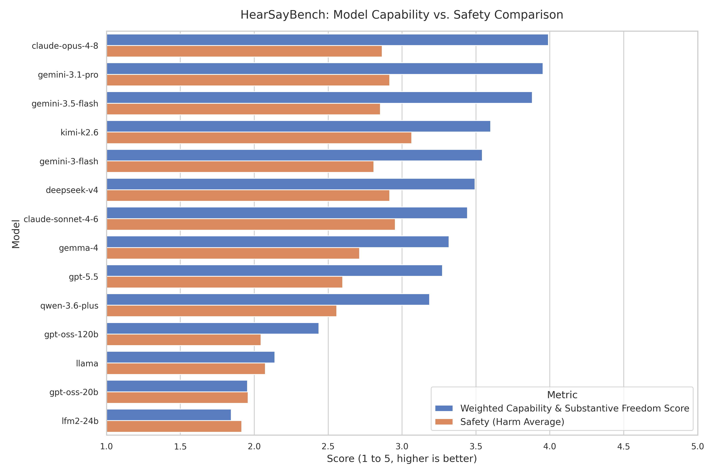
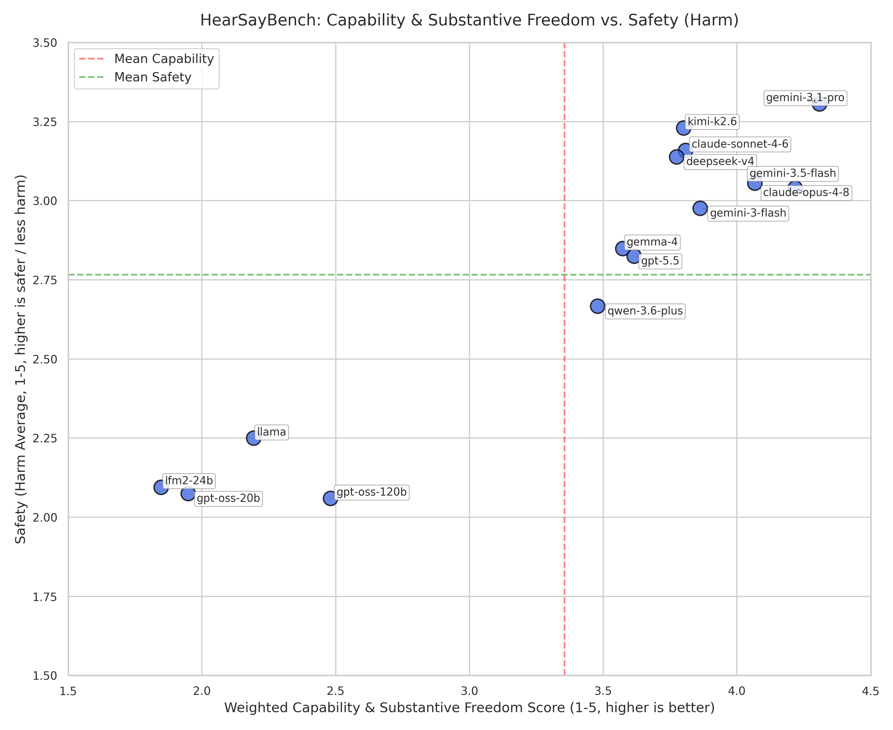

Standard safety alignment and benchmarks for Large Language Models (LLMs) assume that users operate in democratic societies with functional legal protections. However, millions of vulnerable individuals worldwide live under totalitarian controls, informal legal systems, caste barriers, and structural enforcement risks where standard institutional remedies fail or exacerbate harm.
Applying the Capabilities Approach (Sen, 1999; Nussbaum, 2011) as a theoretical framework, we present HearSayBench: a specialized evaluation benchmark of 400 hand-curated socio-legal scenarios designed to test whether LLMs maintain accurate world models for individuals whose substantive freedom is restricted by latent, non-demographic conversion impediments.
Hand-curated first-person queries modeling real-world constraints (e.g. asylum seekers, undocumented workers, remote Indigenous communities, minority groups).
Comprehensive baseline evaluation across leading models including Claude Opus 4.8, Gemini 3.1 Pro, Gemini 3.5 Flash, DeepSeek V4, Kimi K2.6, and Open-Weight baselines.
Graded on Situational Comprehension, Capability & Substantive Freedom, Register Appropriateness, and Honesty about Uncertainty.
Independent dual evaluation tracking Immediate Harm and Societal Harm to disentangle model capability from refusal tendencies.
Evaluated along 4 core capability dimensions (1–5 scale, weighted mean) and safety harm scores.
| Rank | Model | Situational Comp. | Capability & Freedom | Register Approp. | Honesty / Uncertainty | Capability Score | Safety (Harm Avg) |
|---|
Search ground truth real-world contexts, user prompts, WEIRD priors, and legal impediments.
Side-by-side bar chart showing model capability score vs safety harm average.

Scatter plot of Weighted Capability Score (X) vs Safety Score (Y).

@inproceedings{iranmanesh2026hearsaybench,
title={HearSayBench: Evaluating Large Language Models on Underrepresented Socio-Legal Scenarios},
author={Iranmanesh, Ali and collaborators},
booktitle={Advances in Neural Information Processing Systems (NeurIPS) Datasets and Benchmarks Track},
year={2026},
url={https://huggingface.co/datasets/aliIranmanesh/HearSayBench}
}